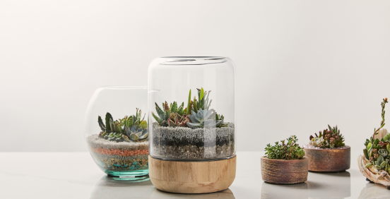
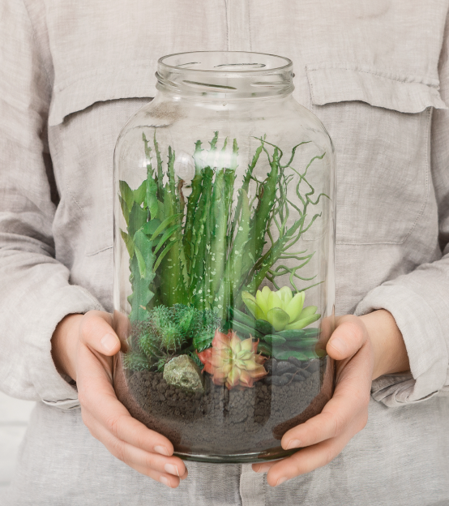
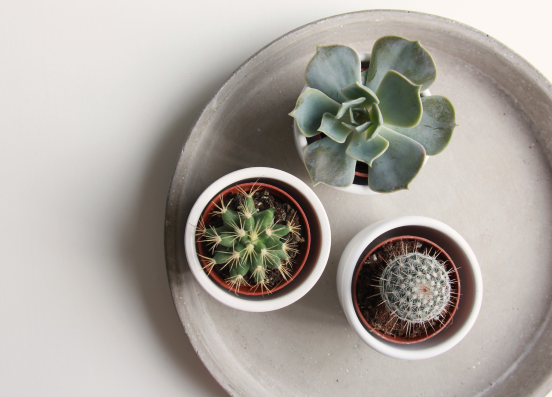
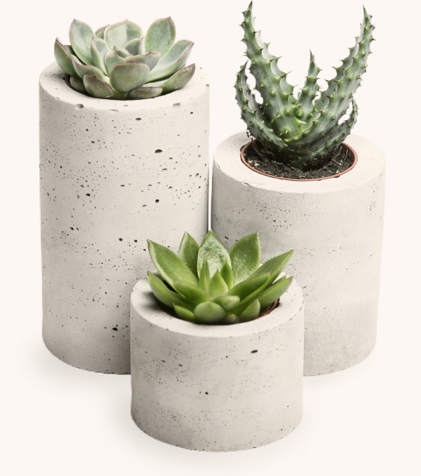

Кактусы отличаются особым видом стеблей. Именно в них накапливаются запасы влаги. У кактусов растут колючки, щетинки,
волоски, которые не позволяют испаряться влаге
и прикрывают стебель от солнечных лучей. Кактус — очень выносливое
растение, которое в домашних условиях может жить долгое время без полива. У большинства видов комнатных кактусов зимой
наступает период покоя, а весной они активно развиваются. Цветут кактусы один раз в год, распуская соцветия ярких
оттенков.
Что такое суккуленты?
Суккуленты (в переводе с латыни «succulentus» означает ‘сочный’) — растения, которые отличаются видовыми особенностями и принадлежат к разным культурам, но у каждого их этих видов есть специальные ткани, которые содержат запасы воды.



В природе они встречаются в засушливых регионах, и благодаря своей особенности способны долго обходиться без воды.
Специфический внешний вид и непривередливость позволять использовать суккуленты для озеленения интерьеров и ландшафтного дизайна – оформления клумб, террас и альпийских горок.
Виды суккулентов
В группу суккулентов входит несколько семейств: кактусовые, толстянковые, агавовые, ластовневые, лилейные, молочайные, аизооновые растения.
Кактусы

Толстянковые виды
Семейство толстянковых суккулентов состоит из листовых растений и включает около 1500 видов растений. Они отличаются сочными толстыми листьями и стеблями. Среди популярных комнатных растений этого семейства можно назвать эониум, крассулу (толстянка), эхеверию, каланхоэ, седум (очиток), молодило. Мясистые листья у растений прикреплены в определенном порядке, имеют короткий стебель. Размножаются толстянковые черенками и листьями. Цветут соцветиями, собранными из мелких ароматных цветков.

Агавовые виды
Агава — многолетнее суккулентное растение с коротким стеблем или вообще бесстебельное. На кустике вырастают крупные мясистые листья, собранные в прикорневой розетке. По краям мечевидные листья имеют шипы. Цвет листьев у агавы отличается зеленым, серо-голубым, серым оттенком, встречаются виды с белыми или желтыми полосами. Небольшие агавы с медленным ростом выращивают как комнатные растения, а крупные высаживают на клумбы. Зацветает растение очень редко, выбрасывая цветочную стрелу с сотнями мелких колокольчиков.

Ластовневые виды
Суккуленты семейства ластовневые (ласточниковые) представлены в комнатном цветоводстве такими растениями, как церопегия, гуэрния, хойя, стапелия и стефанотис. Эти растения имеют стебли с многореберным покрытием. По краям ребер размещены сосочки и бугорки — зачаточные подушкообразные листья. Но главной особенностью суккулентов этого семейства считают яркие цветки с неприятным запахом. Аромат их очень тонкий, поэтому на расстоянии практически не слышен. В природе эти растения привлекают к себе таким ароматом насекомых.

Лилейные виды
Из семейства лилейные в комнатных условиях выращивают алоэ, хавортию и гастерию. Они быстро разрастаются в помещении, но не любят открытого пространства. Суккуленты этой группы привлекают внимание листьями. Цветки у них невзрачные, их обычно срезают, чтобы растение не истощилось. Алоэ выращивают как лекарственное растение. На открытом солнце листья лилейных видов могут получить ожоги и теряют свою привлекательность. Поэтому горшки с цветками летом выставляют в полутень, а зимой, наоборот, подвигают ближе к окну.

Молочайные виды
Молочаи домашние по форме напоминают шарообразную форму кактусов. Их особенность — ядовитый млечный сок, который выделяется при любом повреждении стеблей или листьев. Комнатный молочай успешно разрастается на освещенном месте, но весной его лучше прикрывать от прямых солнечных лучей. У растения есть довольно высокий ствол, на котором размещены красивые листья. Практически все виды молочая цветут и дают семена для дальнейшего размножения.

Аизооновые виды
Суккуленты семейства аизооновые представлены исключительно листовыми видами. Внешне эти растения напоминают «живые камни» и удивительные фигурки. Некоторые виды нарастают попарно и формируют плотные куртины. Наиболее популярными считаются конофитумы, фаукарии, фритии, литопсы. Растения красиво цветут, раскрывая одиночные цветки на верхней части стебля. Куртина, состоящая из отдельных растений, живет и разрастается не более 5 лет. Потом аизооновые виды размножают прикорневыми отводками, которые пересаживают в дренированную почву.

Особенности суккулентов
Суккуленты накапливают влагу и способны выживать на самых сухих неплодородных почвах при практически полном отсутствии увлажнения на самом жарком иссушающем солнце.
В помещении суккуленты быстро привыкают к температуре и уровню влажности.
Для правильного обмена веществ суккулентам необходимо много света.В затененных местах они вытягиваются, а листья и стебли теряют насыщенный зеленый цвет. Молодые растения могут получить ожоги на солнце.
Суккулентам присущ особый тип метаболизма, позволяющий им тратить меньше воды на единицу ассимилируемого вещества.
Суккуленты могут и любят жить в тесноте. Именно поэтому с помощью этих растений можно составлять различные красивые композиции.

Также, известны лечебные свойства суккулентов. Так, например, самым популярным и известным лекарственным растением среди суккулентов является алоэ древовидное. Это растение поможет вам избавиться от различных вирусных и грибковых заболеваний;
Алоэ вера используют как добавление в косметические средства для смягчения кожи или укрепления силы и роста волос;
Каланхоэ Дегремона станет отличным помощником в лечении различных кожных заболеваний;
Каланхоэ городчотое поможет ослабить боль от ожогов;
Кактус «Царица ночи» широко применяется в лечении гипотонии;
Крассула или денежное дерево, поможет с лечением ангины и заболеваний легких.
Уход за растениями
Суккуленты — это идеальное комнатное растение, особенно для тех, у кого нет опыта в «садоводстве». Здесь собраны 9 полезных советов, чтобы суккуленты всегда радовали вас.
Удобряйте суккуленты летом
Суккуленты не нуждаются в большом количестве удобрений, но вы можете слегка их подкармливать в течение весенне-летнего периода. Главное — не злоупотреблять: это может привести к тому, что ваш суккулент будет расти быстро, но станет слишком слабым.
Часто вращайте суккуленты
Суккуленты любят прямые солнечные лучи, но вполне вероятно, что только одна сторона будет получать достаточно света, поэтому Лэнгтон и Рэй предлагают вращать растение как можно чаще. По форме суккулентов можно понять, какой стороне не хватает света: растения будут наклоняться к солнцу.
Дренажные отверстия горшков
Суккуленты не любят переувлажненную почву, поэтому дренажные отверстия важны для предотвращения гниения и избытка воды. Для начинающих “садоводов” идеально подойдут терракотовые горшки.
Должно быть достаточно света
Суккуленты любят свет и нуждаются примерно в шести часах солнца в день. Молодые суккуленты могут обгореть под прямыми солнечными лучами, поэтому вам, возможно, придется постепенно выводить их на солнце — для начала можно ставить под прозрачную занавеску.
Поливайте только почву
Поливайте именно почву, пока вода не выйдет из дренажных отверстий. Не используйте распылитель для полива суккулентов — это может привести к ломкости корней и плесневению листьев. Еще один вариант: поместите горшок в кастрюлю с водой и позвольте ей впитаться через дренажные отверстия.
Выбирайте правильную почву
Суккуленты нуждаются в специальной почве, поэтому обычная земля с улицы не подойдет. Обратите внимание на готовую почву для кактусов или смешайте почву для домашних растений с песком, пемзой или перлитом. Корни суккулентов очень хрупкие, поэтому будьте осторожны при пересадке
Полив зависит от сезона
Суккуленты нуждаются в большем количестве энергии, когда они находятся в фазе роста — весной и летом. В теплый сезон растения требуют гораздо больше воды, чем когда они отдыхают — осенью и зимой. Однако переувлажнение может убить ваш суккулент, поэтому перед поливом убедитесь, что почва достаточно сухая.
Избавляйтесь от вредителей
Чтобы избавиться от насекомых и их личинок, опрыскайте почву 70-процентным изопропиловым спиртом. Иногда ричина в переувлажнении и чрезмерном удобрении растений. Отодвиньте “зараженные” растения подальше от других и также опрыскайте их средством.
Суккуленты должны быть в чистоте
Аккуратно протирайте листья и колючки влажной тряпкой, а чтобы добраться до труднодоступных мест, используйте мягкую кисточку.